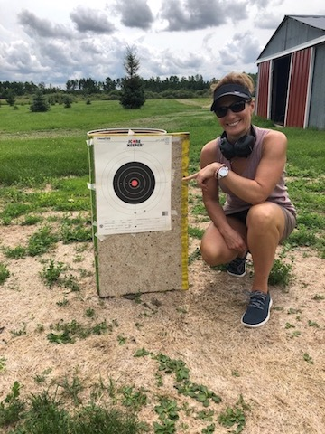

About Me
Hello, and welcome to my Portfolio (of life)! My name is Athena and I live in New Hampshire, with my two best friends. My husband Jim, and Hercules, our adorable Maltese. One of our favorite things to do is to go to the beach. Unfortunately, Hercules can't come with us because dogs aren't allowed at the beach. The inhumanity! We compensate for it by taking him for rides on our scooters. The photo you see here was taken this summer while visiting my husband's family. It was my first time shooting a gun and I got a bullseye. Yes!
I've created this site as an assignment for GW coding bootcamp. There's a lot of material to cover, but I'm learning faster than I thought I would be able to. What I enjoy most about it is that it challenges me to achieve things beyond what I thought I could do. I hope that I will be able to transition into a developer role in the near future. I believe I can, I BELIEVE I CAN!